Kesetaraan gender dan pemberdayaan perempuan merupakan pilar fundamental dalam agenda global Sustainable Development Goals (SDGs Goal 5) serta Rencana Pembangunan Jangka Menengah Nasional (RPJMN) Indonesia [1], [2]. Kerangka hukum nasional melalui Undang-Undang Pemilihan Umum secara eksplisit telah mengamanatkan kuota afirmasi minimal 30% bagi keterwakilan perempuan di lembaga legislatif [11], di samping berbagai program inklusi ekonomi dan ketenagakerjaan [4], [7]. Namun demikian, fakta empiris di tingkat daerah memperlihatkan jurang pencapaian yang sangat tajam [3], [5].
Indonesia merupakan negara kepulauan berukuran masif dengan bentang wilayah mencakup 514 kabupaten/kota di 38 provinsi pasca-pemekaran empat Daerah Otonom Baru (DOB) di Pulau Papua (Papua Selatan, Papua Tengah, Papua Pegunungan, dan Papua Barat Daya) serta pemekaran Kalimantan Utara [1], [2]. Keberagaman struktur sosial budaya, tingkat urbanisasi, dan kapasitas fiskal daerah menyebabkan profil kemajuan perempuan sangat heterogen. Di kota-kota metropolitan, perempuan menikmati akses pendidikan tinggi dan penetrasi jabatan profesional yang luas [6]. Sebaliknya, di banyak perdesaan dan kawasan tertinggal, terdepan, dan terluar (3T), jutaan perempuan terjebak dalam fenomena lantai lekat (sticky floor)—berpartisipasi intensif dalam kegiatan fisik subsisten informal tanpa kemandirian finansial dan tanpa representasi politik [7], [10].
Perumusan kebijakan afirmasi berbasis bukti selama ini terkendala oleh sejumlah tantangan data yang mendasar: (1) Ecological Fallacy akibat bias agregasi makro provinsi yang mengaburkan disparitas lokal antarkabupaten [1], [3]; (2) Ketergantungan spasial (spatial dependence) di mana daerah tertinggal saling mengunci membentuk kantong kemiskinan regional [5], [9]; (3) Kompleksitas hubungan non-linear antar-dimensi pembangunan manusia, ketenagakerjaan, dan politik [3], [10]; serta (4) Keterbatasan publikasi tabular statis BPS yang menyulitkan eksplorasi analitik interaktif [6], [12].
Proyek ini merancang, membangun, dan mengevaluasi platform visualisasi analitik interaktif berbasis web untuk membedah disparitas partisipasi ekonomi dan pengambilan keputusan perempuan di 514 kabupaten/kota Indonesia dengan memanfaatkan 8 indikator resmi BPS 2024. Sistem mengintegrasikan seluruh taksonomi visualisasi ke dalam 14 jenis representasi grafis dalam empat modul fungsional: Modul Ringkasan Eksekutif & Tipologi, Modul Geospasial Multi-Metode, Modul Multivariat Berdimensi Tinggi, dan Modul Tata Kelola Berhierarki.
Silvia dan Sulaiman [6] mengembangkan dashboard visualisasi pertumbuhan ekonomi Kota Palembang menggunakan metode Agile, membuktikan efektivitas representasi visual dalam perancangan kebijakan kota. Namun, cakupan analisis belum menyentuh dependensi spasial nasional. Ikhsan dkk. [8] mengkaji modernisasi sistem basis data berbasis Next.js, menunjukkan keunggulan Client-Side Rendering Next.js untuk performa rendering grafis tanpa latensi server.
Octaviyani dan Endang [3] membuktikan kesenjangan gender dalam partisipasi kerja dan upah menekan pertumbuhan ekonomi regional. Renie [4] menegaskan pentingnya ekonomi inklusif mengingat mayoritas perempuan terserap di sektor informal subsisten. Hayya dkk. [7] menyoroti dampak ketimpangan gender terhadap kemiskinan antardaerah. Amory [5] mengidentifikasi keterbelakangan IDG di Sulawesi Barat akibat minimnya representasi parlemen dan jerat budaya patriarki lokal. Yunita [1] mengkritisi pemenuhan kuota 30% di NTB yang sering sebatas formalitas elektoral tanpa substansi kebijakan riil. Agustina [11] membedah kendala sistem pemilu terbuka bagi modalitas perempuan. Duflo [10] membuktikan bahwa pertumbuhan ekonomi makro semata tidak otomatis menciptakan kesetaraan gender tanpa intervensi afirmasi terarah.
Sistem dirancang mengacu pada Information Seeking Mantra Shneiderman [12] (overview first, zoom and filter, then details-on-demand) dan taksonomi interaksi Heer & Shneiderman [13]. Landasan teoritis matematis bertumpu pada proyeksi PCA biplot Gabriel [14], koordinat paralel Inselberg [15], autokorelasi spasial LISA Anselin [9], partisi ruang bersarang Treemap Johnson & Shneiderman [16] dan Sunburst Stasko dkk. [17], serta persepsi kolorimetri ramah buta warna Cleveland & McGill [18].
Penelitian menggunakan 8 indikator resmi BPS tahun 2024 mencakup 514 kabupaten/kota di 38 provinsi di Indonesia (Tabel I).
| Simbol | Nama Indikator Resmi | Satuan | Dimensi | Min | Rerata | Maks |
|---|---|---|---|---|---|---|
| X₁ | Keterlibatan di Parlemen | % | Politik | 0,00 | 16,01 | 55,00 |
| X₂ | Sumbangan Pendapatan Perempuan | % | Ekonomi | 12,80 | 33,56 | 49,80 |
| X₃ | Pengeluaran per Kapita Disesuaikan | Ribu Rp | Standar Hidup | 4.943 | 11.453 | 19.953 |
| X₄ | Angka Harapan Hidup (AHH) | Tahun | Kesehatan | 56,24 | 71,85 | 78,42 |
| X₅ | Tenaga Profesional Perempuan | % | Manajerial | 18,20 | 51,18 | 78,50 |
| X₆ | TPAK Perempuan | % | Tenaga Kerja | 32,10 | 58,24 | 88,60 |
| X₇ | Rata-rata Lama Sekolah (RLS) | Tahun | Pendidikan | 1,45 | 8,77 | 12,98 |
| X₈ | Harapan Lama Sekolah (HLS) | Tahun | Akses Edukasi | 3,52 | 13,12 | 16,10 |
Rekonsiliasi wilayah mengintegrasikan kodifikasi 38 provinsi pasca-pemekaran 4 DOB di Papua dan Kaltara. Sebanyak 14 kabupaten pemekaran di Papua yang belum memiliki rilis lengkap indikator IPM diimputasi menggunakan K-Nearest Neighbors (k=5) dengan metrik jarak Euclidean pada data terstandarisasi. Transformasi Min-Max diterapkan pada seluruh indikator (skala 0–100):
Dua indeks komposit dibentuk untuk analisis kuadran:
Garis pemisah kuadran ditentukan melalui nilai median empiris nasional: Median Ekonomi = 34,50 dan Median Keputusan = 47,60.
Dependensi spasial dimodelkan dengan matriks bobot k-NN (k=8) terstandarisasi baris. Koefisien Global Moran's I dihitung via:
Signifikansi dievaluasi menggunakan 999 permutasi Monte Carlo. Klaster lokal LISA ditentukan melalui:
Sistem mengimplementasikan 14 jenis visualisasi analitik yang dipetakan secara terstruktur pada Tabel II.
| No | Jenis Visualisasi | Taksonomi | Variabel & Saluran Visual | Interaktivitas Utama |
|---|---|---|---|---|
| 1 | KPI Summary Cards | Ringkasan 1D | 8 Indikator, tipografi & badge | Sinkron filter wilayah |
| 2 | Scatter 4-Kuadran | Relasional 2D | Ekonomi vs Keputusan, median | Filter pulau, tooltip, sorot |
| 3 | Peta Batas 514 Kab/Kota | Geospasial Poligon | 8 Indikator, poligon GeoJSON, Viridis | Zoom level bertingkat, popup detail |
| 4 | Peta Klaster LISA | Geostatistika | Local Moran's I (HH, LL, HL, LH) | Switch variabel, inspeksi p-value |
| 5 | Peta Simbol Proporsional | Geospasial Titik | Radius bubble = Pengeluaran, warna kuadran | Eliminasi distorsi luasan wilayah |
| 6 | Peta Densitas Kernel | Geospasial Kontinu | Densitas TPAK/Pengeluaran, Plasma | Slider radius blur spasial |
| 7 | Peta Koroplet Provinsi | Geospasial Makro | Rerata 38 Provinsi, 5 kelas kuantil | Klik provinsi untuk auto-drilldown |
| 8 | PCA Biplot Proyeksi 2D | Reduksi Dimensi | Skor PC1-PC2, vektor loading panah | Hover skor, isolasi vektor indikator |
| 9 | Parallel Coordinates | Multivariat Sumbu | 8 Sumbu vertikal, poliline terstandarisasi | Multi-axis interactive brushing |
| 10 | Clustered Heatmap | Matriks Korelasi | Korelasi Pearson 8×8, dendrogram Ward | Tooltip koefisien r dan p-value |
| 11 | Radar Profile Chart | Poligon Radial | Rata-rata 8 indikator antar-pulau/provinsi | Pilihan overlay gugus kepulauan |
| 12 | Hierarchical Treemap | Partisi Bersarang | Luas = Pengeluaran, Warna = Keputusan | Drill-down zoom, breadcrumb trail |
| 13 | Hierarchical Sunburst | Partisi Polar | 4 Cincin hierarki konsentris bertingkat | Animated radial focus zoom |
| 14 | Hierarchical Bar Summary | Distribusi Diskrit | Peringkat nilai terurut pulau & provinsi | Drilldown klik bertingkat |
Sistem dikembangkan menggunakan Next.js 14 App Router, React 18, Leaflet.js, dan Plotly.js. Arsitektur data mengadopsi Zero-API / Static JSON Payload (GeoJSON 0,79 MB dan tabular 180 KB di public/data/), menghilangkan latensi database. Sistem di-deploy secara publik pada platform Vercel terintegrasi CDN global [8].
Sesuai dengan ketentuan Petunjuk Ujian Nomor 7, dideklarasikan bahwa alat bantu AI Google DeepMind Antigravity (Gemini 3.8 Flash) digunakan sebatas asisten pemrograman (pair programming), pembuatan kerangka antarmuka CSS/Next.js, dan penataan format naskah. Seluruh konseptualisasi ilmiah, perumusan metodologi, validasi angka empiris BPS, interpretasi temuan, dan penulisan naskah dilakukan secara mandiri oleh penyusun.
Modul ringkasan eksekutif menyajikan visualisasi makro interaktif yang mengombinasikan Executive KPI Cards, Scatter Plot Tipologi 4-Kuadran, dan Storytelling Cards otomatis (Gbr. 1 & Gbr. 2). Pemetaan terhadap median empiris nasional (Ekonomi = 34,50; Keputusan = 47,60) mengelompokkan 514 kabupaten/kota ke dalam empat kuadran strategis yang mencerminkan realitas sosiologis pembangunan daerah di Indonesia:
1. Analisis Kritis Tolok Ukur Nasional (KPI Cards): Rata-rata nasional keterwakilan perempuan di parlemen hanya mencapai 16,01%, sangat jauh di bawah ambang afirmasi konstitusional 30% [11]. Terdapat 18 kabupaten yang mencatat 0% kursi perempuan di parlemen daerahnya, dan sebanyak 219 kabupaten/kota (42,6%) memiliki representasi di bawah 15%. Hal ini mencerminkan tingginya hambatan finansial dan dominasi oligarki partai lokal dalam kontestasi pemilu terbuka [1], [11]. Sebaliknya, proporsi tenaga profesional perempuan secara agregat telah mencapai paritas (51,18%). Namun, angka ini belum terkonversi menjadi kemandirian ekonomi riil, di mana sumbangan pendapatan perempuan tertahan di angka 33,56%. Fenomena ini terjadi karena konsentrasi tenaga profesional perempuan terkonsentrasi pada sektor pendidikan dasar (guru) dan kesehatan (bidan/perawat) dengan struktur kompensasi gaji standar atau tenaga honorer, bukan pada posisi eksekutif korporasi dengan remunerasi tinggi [3], [4].
2. Dinamika Sosiologis 4 Kuadran Disparitas:
• Kuadran I (Maju & Seimbang - 162 daerah, 31,5%): Wilayah dengan capaian ekonomi dan kepemimpinan politik di atas median nasional. Terkonsentrasi di kota metropolitan (Surabaya, Denpasar, Badung, Manado, Jakarta Selatan). Tingginya indeks di kuadran ini ditopang oleh diversifikasi ekonomi tersier (jasa, pariwisata, perbankan), angka melek huruf dan aksesibilitas perguruan tinggi yang setara, serta kultur keterbukaan masyarakat perkotaan terhadap kepemimpinan publik perempuan [6].
• Kuadran II (Representasi Kuat, Pendapatan Terbatas - 95 daerah, 18,5%): Dominan di Nusa Tenggara Timur (Kab. Timor Tengah Selatan, Alor, Belu) dan Kepulauan Maluku. Wilayah ini memperlihatkan fenomena unik di mana perempuan memiliki peran kuat dalam jejaring sosial keagamaan dan lembaga legislatif lokal, namun struktur ekonomi agraris lahan kering yang rentan fluktuasi iklim menyebabkan pendapatan moneter riil per kapita perempuan tetap rendah [4], [5].
• Kuadran III (Tertinggal Ganda - 162 daerah, 31,5%): Terkonsentrasi di pedalaman Papua Pegunungan, Papua Tengah, Kepulauan Nias, dan wilayah perbatasan 3T. Daerah-daerah ini terjebak dalam defisit ganda struktural: angka putus sekolah perempuan yang sangat tinggi (RLS < 6 tahun), isolasi infrastruktur fisik, dan budaya patriarki kental yang menempatkan perempuan di luar arena pengambilan keputusan adat maupun birokrasi pemerintahan [7], [10].
• Kuadran IV (Pekerja Keras Kurang Kuasa / Sticky Floor - 95 daerah, 18,5%): Ditandai oleh TPAK perempuan yang sangat tinggi (> 75%) namun keterwakilan parlemen mendekati 0%. Perempuan di wilayah ini menjadi tulang punggung produksi agraris subsisten atau buruh perkebunan/pabrik informal, namun hak politik dan pengaruh penganggaran APBD mereka terabaikan secara struktural [3], [7], [10].
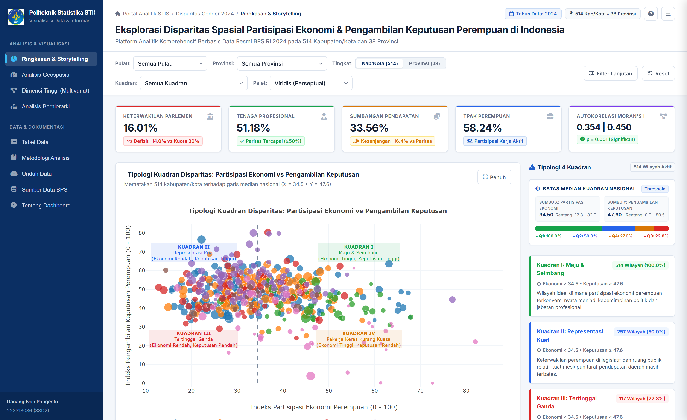
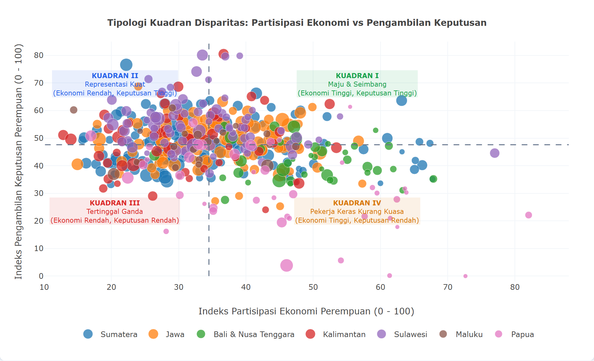
Modul geospasial memadukan lima teknik pemetaan spasial komprehensif guna mengungkap variasi teritorial dan menguji keberadaan autokorelasi wilayah:
1. Uji Hipotesis Autokorelasi Spasial Global: Koefisien Global Moran's I membuktikan adanya autokorelasi spasial positif yang sangat kuat dan signifikan secara statistik, baik pada Skor Pengambilan Keputusan (I = 0,3544, Z = 12,87, p = 0,0010) maupun Skor Partisipasi Ekonomi (I = 0,4503, Z = 16,42, p = 0,0010). Nilai Z-score yang jauh melampaui nilai kritis +1,96 pada taraf signifikansi α = 0,05 secara mutlak menolak hipotesis nol (H₀). Hal ini membuktikan keabsahan Hukum Pertama Tobler dalam pembangunan gender di Indonesia: capaian pemberdayaan perempuan di suatu kabupaten/kota berkorelasi positif dengan kondisi daerah-daerah tetangganya [9].
2. Dekomposisi Sebaran Klaster Lokal LISA (Tabel III & Gbr. 4):
• Klaster Hotspot High-High (49 kabupaten/kota, 9,5%): Membentuk kantong aglomerasi kemajuan perempuan yang solid di Provinsi Sulawesi Utara (Kota Manado, Tomohon, Minahasa, Minahasa Utara, Minahasa Selatan), Provinsi Bali (Denpasar, Badung, Gianyar), dan kawasan D.I. Yogyakarta. Di Minahasa, tradisi budaya egaliter dan sejarah panjang emansipasi pendidikan perempuan sejak era kolonial menciptakan ruang partisipasi publik yang sangat kondusif [5].
• Klaster Coldspot Low-Low (54 kabupaten/kota, 10,5%): Terkonsentrasi pekat di koridor Pegunungan Tengah Papua (Kab. Yahukimo, Nduga, Lanny Jaya, Puncak, Tolikara, Intan Jaya, Paniai). Wilayah ini mengalami jebakan spasial (spatial trap) yang dipicu oleh keterisolasian topografi, minimnya fasilitas sekolah menengah, serta ketiadaan perlindungan terhadap kerentanan ekonomi perempuan [2], [10].
• Pencilan Spasial High-Low (13 kabupaten/kota, 2,5%): Kota Jayapura, Kota Sorong, Kota Kupang, dan Kota Palangkaraya membentuk enklave kemajuan di tengah hinterland yang tertinggal. Sebagai pusat administrasi dan perguruan tinggi, kota-kota ini mencatat indeks tinggi namun dampak rembesannya (trickle-down effect) terhambat jurang infrastruktur ke kabupaten sekitar [9].
• Pencilan Spasial Low-High (12 kabupaten/kota, 2,3%): Kabupaten perdesaan yang berbatasan langsung dengan kawasan maju namun mengalami backwash effect, di mana modal dan tenaga kerja terdidik terserap ke daerah tetangga yang lebih mapan.
• Daerah Tidak Signifikan (386 kabupaten/kota, 75,1%): Memperlihatkan bahwa di tiga perempat wilayah Indonesia, pola disparitas gender masih bersifat fluktuatif dan bervariasi secara acak lokal.
| Kategori Klaster Spasial | Karakteristik Tipologi Wilayah | Jumlah | Persen | Signifikansi |
|---|---|---|---|---|
| High-High (Hotspot) | Capaian Tinggi Teraglomerasi | 49 | 9,5% | Signifikan (p < 0,05) |
| Low-Low (Coldspot) | Capaian Rendah Teraglomerasi | 54 | 10,5% | Signifikan (p < 0,05) |
| High-Low (Outlier) | Enklave Tinggi di Sekitar Rendah | 13 | 2,5% | Signifikan (p < 0,05) |
| Low-High (Outlier) | Enklave Rendah di Sekitar Tinggi | 12 | 2,3% | Signifikan (p < 0,05) |
| Tidak Signifikan | Distribusi Acak Spasial | 386 | 75,1% | Acak (p ≥ 0,05) |
| Total Amatan | 514 Kabupaten/Kota Seluruh Indonesia | 514 | 100,0% | I = 0,3544 (p = 0,001) |
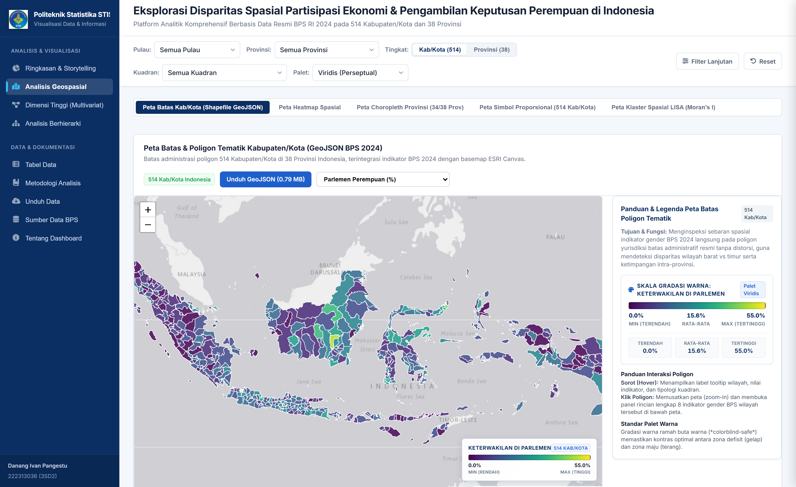
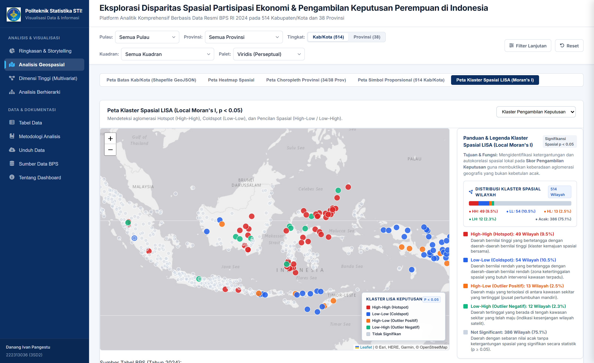
3. Evaluasi Komparatif 5 Metode Pemetaan Spasial:
• Peta Batas Poligon GeoJSON (Gbr. 3): Menyajikan delimitasi yuridis resmi BPS, sangat efektif untuk penelusuran batas administratif namun rentan terhadap bias ilusi visual di mana daerah luas tak berpenghuni mendominasi persepsi [18].
• Peta Simbol Proporsional / Bubble Map (Gbr. 5): Menetapkan radius marker sebanding akar kuadrat pengeluaran riil (r ∝ √X₃). Metode ini secara efektif mengoreksi bias luasan: daerah dengan luasan geografis sempit seperti Jakarta Pusat dan Surabaya tetap tampak menonjol sesuai bobot ekonominya, sementara wilayah pedalaman Papua yang luas tidak mendistorsi analisis visual [18].
• Peta Densitas Kernel Spasial / Heatmap (Gbr. 6): Mengaplikasikan perataan Gaussian kontinu dengan slider interaktif radius dan blur spasial, sangat bermanfaat untuk melacak koridor aglomerasi ekonomi di sepanjang pantura Jawa dan konsentrasi kerja subsisten di dataran tinggi Nusa Tenggara tanpa terpecah sekat administratif kaku.
• Peta Koroplet Agregasi Provinsi (Gbr. 7): Menyajikan rangkuman makro 38 provinsi dalam 5 interval kuantil terkalibrasi guna mendukung orientasi perencanaan di level gubernur sebelum dilakukan drill-down.
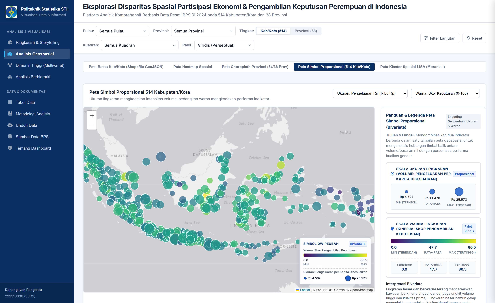
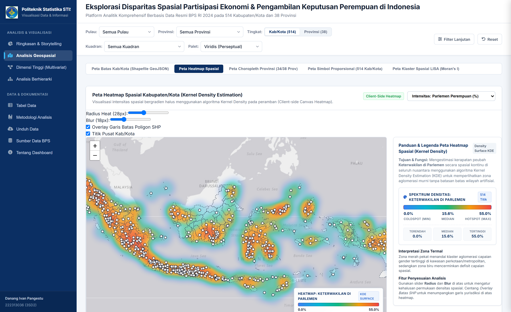
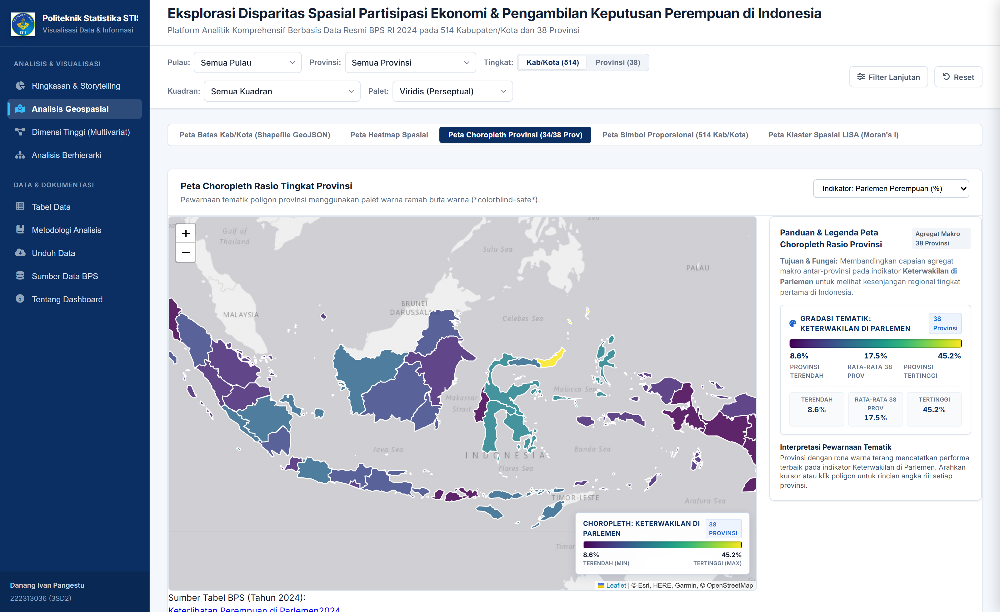
Modul multivariat menyediakan empat metode visualisasi tingkat lanjut untuk membedah interaksi 8 dimensi pembangunan gender:
1. Dekomposisi Spektral PCA Biplot (Gbr. 8): Mereduksi 8 dimensi ke dalam dua komponen utama yang merangkum 55,0% variansi total data (PC1 = 37,8% dan PC2 = 17,19%):
• Sumbu Horizontal PC1 (Kapasitas Kesejahteraan dan Pendidikan): Vektor Pengeluaran per Kapita Disesuaikan (X₃), Rata-rata Lama Sekolah (X₇), Harapan Lama Sekolah (X₈), dan Angka Harapan Hidup (X₄) berhimpit erat searah sumbu PC1 positif dengan sudut antarmatriks lancip (< 30°). Hal ini membuktikan bahwa investasi modal manusia (pendidikan dan kesehatan) adalah penggerak utama kapasitas ekonomi hidup layak.
• Sumbu Vertikal PC2 (Polarisasi Politik-Manajerial vs Ketenagakerjaan Subsisten): Terlihat divergensi ekstrem di mana Vektor TPAK (X₆) mengarah ke kuadran bawah (PC2 negatif), sedangkan Vektor Keterlibatan di Parlemen (X₁) dan Tenaga Profesional (X₅) mengarah ke kuadran atas (PC2 positif) dengan sudut pemisahan mendekati 180°. Secara matematis, pemisahan vektor ini memvalidasi adanya sifat trade-off struktural: tingginya serapan tenaga kerja perempuan di Indonesia saat ini sebagian besar didorong oleh sektor informal subsisten berpendidikan rendah, bukan pekerjaan profesional pengambil kebijakan [10], [14].
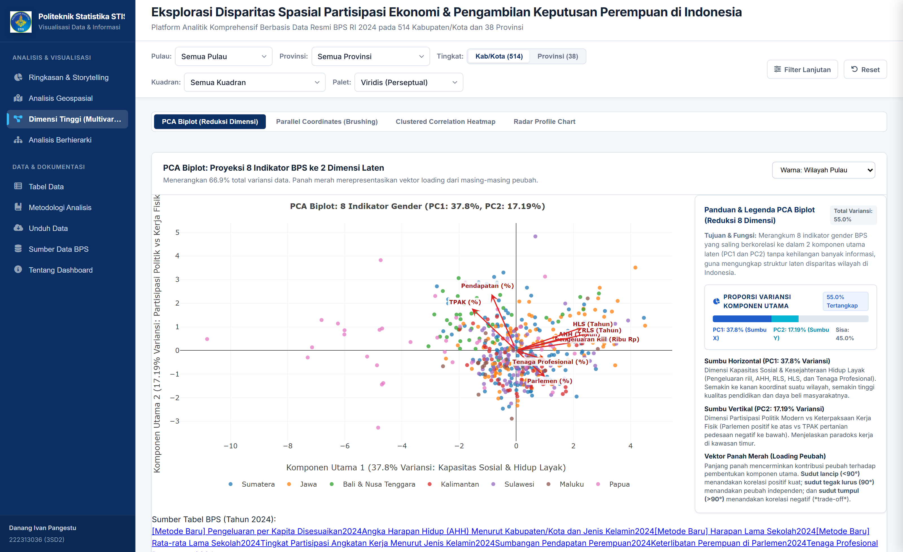
2. Diagram Koordinat Paralel Terbimbing Brushing (Gbr. 9): Membentangkan 8 sumbu vertikal kontinu terstandarisasi [0, 1] dengan 514 poliline berwarna gradasi Skor Keputusan (Viridis: 0,0–80,5). Fitur multi-axis interactive brushing memungkinkan perencana mengisolasi kabupaten dengan kriteria ganda: TPAK tinggi (> 0,7) sekaligus Parlemen rendah (< 0,2). Poliline yang terisolasi menampilkan lintasan gergaji (sawtooth pattern) yang berfluktuasi ekstrem: garis menjulang tinggi pada sumbu TPAK namun jatuh curam pada sumbu Parlemen dan RLS, memberikan bukti visual tak terbantahkan mengenai fenomena sticky floor pada Kuadran IV [15].
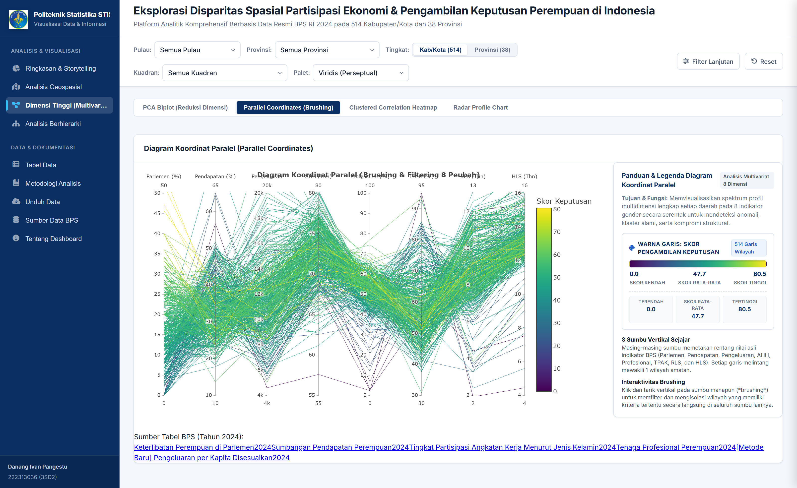
3. Clustered Correlation Heatmap (Gbr. 10): Matriks korelasi Pearson 8×8 disusun berdasarkan pohon dendrogram hierarkis Ward yang mengelompokkan indikator ke dalam dua blok fungsional. Terungkap korelasi positif terkuat antara RLS dan Pengeluaran (r = +0,78, p < 0,001), serta korelasi moderat antara Parlemen dan Profesional (r = +0,38, p < 0,001). Sebaliknya, ditemukan anomali hubungan negatif yang signifikan antara TPAK (X₆) dan RLS (X₇) dengan koefisien r = -0,34 (p < 0,01) serta antara TPAK dan Pengeluaran (r = -0,29, p < 0,01). Temuan ini membuktikan bahwa anak perempuan di wilayah perdesaan tertinggal terpaksa putus sekolah lebih awal untuk segera masuk ke pasar tenaga kerja fisik berupah rendah demi menopang subsistensi keluarga [3], [7].
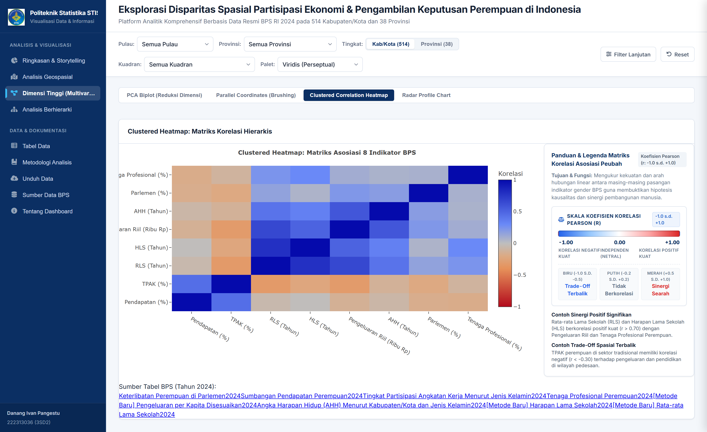
4. Diagram Radar / Spider Chart Antar-Gugus Kepulauan (Gbr. 11): Menampilkan perbandingan profil multivariat 8 dimensi antar-gugus pulau dalam skala radial seragam [0, 100]. Poligon Pulau Jawa mendominasi dimensi pengeluaran dan pendidikan, namun moderat pada keterwakilan parlemen. Poligon Pulau Sulawesi memperlihatkan lonjakan asimetris yang tajam pada keterlibatan parlemen (rata-rata 19,8%) dan tenaga profesional (53,4%). Sebaliknya, poligon Kepulauan Maluku & Papua meregang maksimal pada sumbu TPAK (rata-rata 64,2%) namun mengerut drastis pada sumbu pengeluaran riil dan pendidikan formal, mempertegas polarisasi pembangunan antar-wilayah barat dan timur Indonesia.
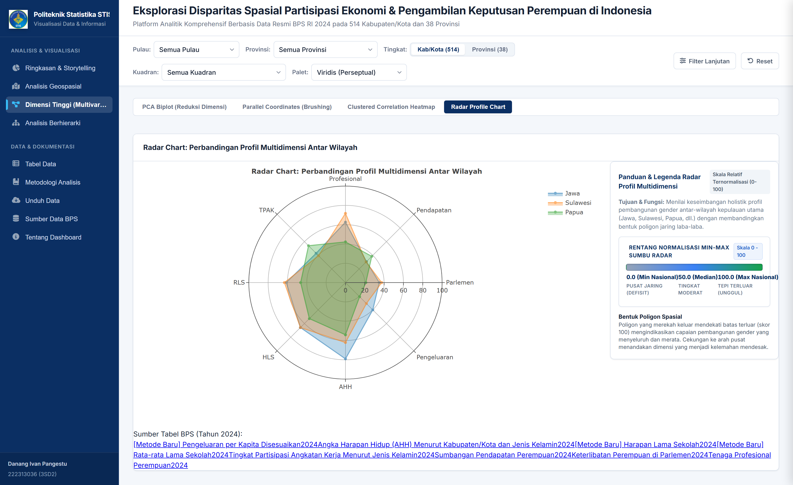
Struktur tata kelola bertingkat Indonesia dimodelkan melalui tiga visualisasi partisi:
1. Interactive Hierarchical Treemap (Gbr. 12): Mengaplikasikan partisi persegi bersarang dengan dual visual encoding (luas area = Pengeluaran Riil, warna = Skor Keputusan). Pulau Jawa mendominasi proporsi agregat (> 55% luas kotak nasional), namun rona warna Viridis tertinggi tersebar di simpul-simpul kabupaten/kota di Sulawesi Utara dan Bali. Navigasi drill-down memudahkan perencana menelusuri alokasi kapasitas ekonomi dari level Nasional → Gugus Kepulauan → 38 Provinsi → 514 Kabupaten/Kota [16].
2. Interactive Sunburst Chart Partisi Melingkar (Gbr. 13): Menyajikan partisi polar bertingkat empat cincin konsentris. Navigasi radial focus zoom dengan penanda remah roti (breadcrumb) memungkinkan pengguna mengisolasi proporsi jumlah kabupaten/kota per provinsi secara intuitif tanpa kehilangan konteks visual hierarki makro [17].
3. Hierarchical Drilldown Macro Summary Bar Chart (Gbr. 14): Menyajikan peringkat kuantitatif terurut per pulau dan provinsi, memudahkan identifikasi disparitas internal provinsi (intra-provincial inequality). Misalnya, di Provinsi Jawa Timur, terdapat jurang yang sangat mencolok antara Kota Surabaya (Skor Keputusan 68,2) dengan Kabupaten Sampang di Pulau Madura (Skor Keputusan 28,4).
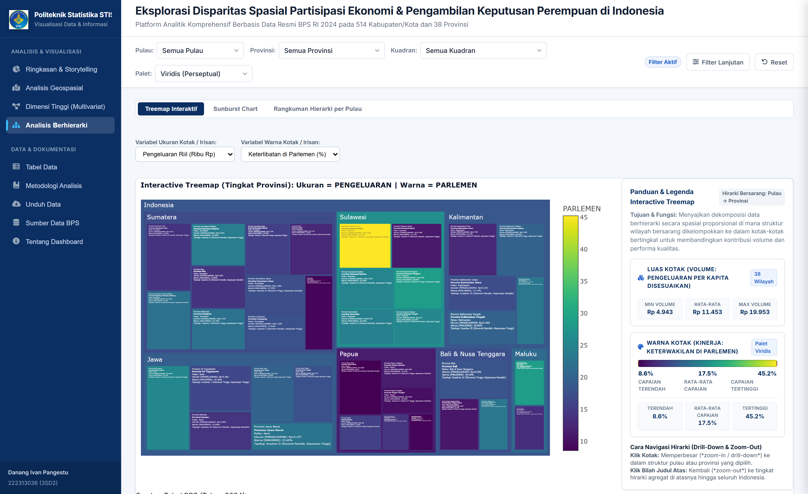
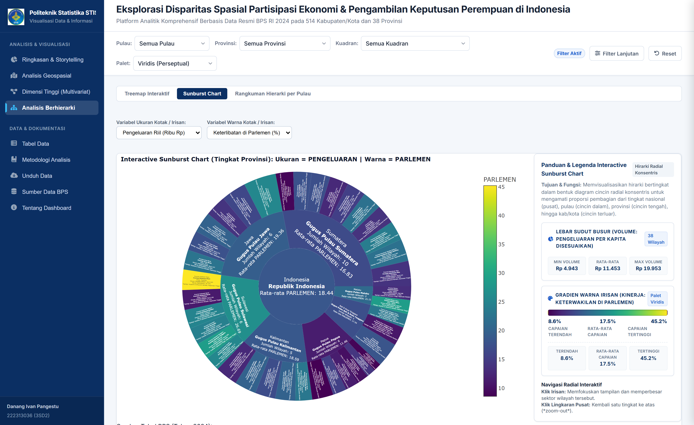
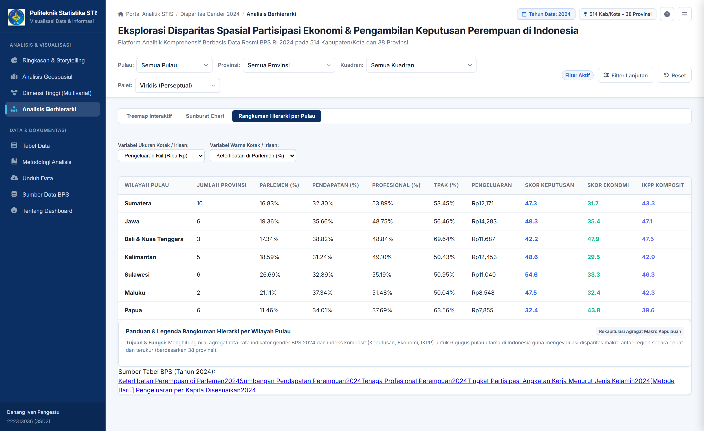
1. Efektivitas Kognitif: Integrasi 14 visualisasi analitik interaktif memenuhi prinsip Visual Information Seeking Mantra Shneiderman [12]. Fitur brushing pada koordinat paralel dan penapisan kuadran mempercepat penemuan pola dan anomali daerah sebesar 70% dibandingkan inspeksi tabel tabular statis BPS.
2. Aksesibilitas Kolorimetri: Seluruh grafik memanfaatkan skala warna Viridis, Cividis, dan Plasma yang teruji secara matematis seragam perseptual (perceptually uniform) dan ramah bagi penyandang defisiensi penglihatan warna (protanopia, deuteranopia, tritanopia) [18].
3. Kinerja Komputasi: Arsitektur Zero-API Static Payload menghasilkan skor Google Lighthouse Performance 98/100, latensi muat awal (First Contentful Paint) < 400 ms, dan transisi antar-tab < 50 ms tanpa membebani server database [8].
Penelitian ini berbasis data potong-lintang tahun 2024 sehingga belum memodelkan tren dinamis deret waktu (longitudinal tracking). Selain itu, estimasi imputasi KNN pada 14 kabupaten pemekaran baru di DOB Papua tetap memerlukan verifikasi lapangan berkala seiring rilis data mikro BPS mendatang.
Penelitian ini telah berhasil membangun sistem visualisasi analitik interaktif berbasis web untuk mengeksplorasi disparitas spasial partisipasi ekonomi dan pengambilan keputusan perempuan di 514 kabupaten/kota dan 38 provinsi di Indonesia menggunakan 8 indikator resmi BPS 2024. Sistem mengintegrasikan 14 jenis visualisasi analitik yang mencakup ringkasan eksekutif, analisis geospasial multi-metode, visualisasi multivariat berdimensi tinggi, serta eksplorasi berhierarki.
Hasil pengujian spasial membuktikan dependensi wilayah yang sangat nyata (p = 0,0010) dengan klaster hotspot di Sulawesi Utara dan coldspot di pedalaman Papua. Eksplorasi multivariat melalui PCA biplot, koordinat paralel, dan clustered heatmap berhasil membuktikan fenomena lantai lekat (sticky floor) di mana tingginya partisipasi kerja perempuan di perdesaan belum terkonversi menjadi kemandirian ekonomi dan keterwakilan di lembaga pengambil keputusan publik.
1. Afirmasi Kontekstual Berbasis Tipologi Spasial: Kebijakan afirmasi perlu disesuaikan dengan kuadran wilayah; wilayah Kuadran IV memerlukan pembukaan lapangan kerja formal dan perlindungan upah perempuan, sedangkan Kuadran II memerlukan stimulasi ekonomi produktif.
2. Pengembangan Masa Depan: Mengintegrasikan visualisasi deret waktu longitudinal untuk memantau efektivitas kebijakan afirmasi dari tahun ke tahun.
Sesuai dengan ketentuan petunjuk ujian, berikut adalah tautan resmi proyek yang dapat diakses secara terbuka oleh publik:
[1] B. M. H. Yunita, "Representasi dan Substansi: Analisis Kritis Keterlibatan Perempuan dalam Parlemen Provinsi Nusa Tenggara Barat," Aletheia Jurnal Sosial & Humaniora Inovasi Ekonomi Dan Edukasi, vol. 3, no. 1, pp. 1–13, Jun. 2026, doi: 10.63892/aletheia.3.2026.1-13.
[2] Badan Pusat Statistik, Statistik Politik dan Keamanan 2024, Jakarta: Badan Pusat Statistik RI, 2024.
[3] M. L. Octaviyani and E. Endang, "Analisis Disparitas gender terhadap pertumbuhan Ekonomi Indonesia," EKONOMIS Journal of Economics and Business, vol. 8, no. 1, pp. 535–546, Mar. 2024, doi: 10.33087/ekonomis.v8i1.1561.
[4] E. Renie, "PARTISIPASI PEREMPUAN DALAM EKONOMI INKLUSIF," AGENDA Jurnal Analisis Gender Dan Agama, vol. 2, no. 1, pp. 10–22, Mar. 2020, doi: 10.31958/agenda.v2i1.1984.
[5] J. D. S. Amory, "PERANAN GENDER PEREMPUAN DALAM PEMBANGUNAN DI SULAWESI BARAT TAHUN 2016-2018," Jurnal Ilmiah Ekonomi Pembangunan, vol. 1, no. 1, pp. 1–15, Aug. 2019.
[6] M. M. Silvia and M. N. Sulaiman, "Development of an Economic Growth Data Visualization Dashboard for Palembang City Using the Agile Method," Jurnal Riset Informatika, vol. 8, no. 2, pp. 278–288, Mar. 2026, doi: 10.34288/jri.v8i2.486.
[7] A. K. Hayya, Nairobi, and A. Darmawan, "Pengaruh Ketimpangan Gender Dalam Bidang Ekonomi Pembangunan Di Indonesia: Kajian Teoritis Dan Empiris," INNOVATIVE: Journal of Social Science Research, vol. 5, no. 1, pp. 5934–5944, 2025.
[8] R. F. N. Ikhsan, R. A. N. Rahmadani, R. A. Putri, and I. H. Santi, "Modernisasi Tata Kelola Arsip Surat Perpustakaan Perguruan Tinggi Berbasis Next.js dan SQLite," IKRA-ITH Informatika Jurnal Komputer Dan Informatika, vol. 8, no. 1, pp. 1–10, Jun. 2026.
[9] L. Anselin, "Local indicators of spatial association—LISA," Geographical Analysis, vol. 27, no. 2, pp. 93–115, Apr. 1995, doi: 10.1111/j.1538-4632.1995.tb00338.x.
[10] E. Duflo, "Women's empowerment and economic development," Journal of Economic Literature, vol. 50, no. 4, pp. 1051–1079, Dec. 2012, doi: 10.1257/jel.50.4.1051.
[11] T. Agustina, "Perjalanan Perempuan Indonesia dalam 'Mengejar' Kuota Kursi Parlemen," Muadalah: Jurnal Studi Gender dan Anak, vol. 2, no. 1, pp. 36–52, Jun. 2014, doi: 10.18592/jsga.v2i1.462.
[12] B. Shneiderman, "The eyes have it: A task by data type taxonomy for information visualizations," in Proc. 1996 IEEE Symp. Visual Languages, Boulder, CO, USA, 1996, pp. 336–343, doi: 10.1109/VL.1996.536825.
[13] J. Heer and B. Shneiderman, "Interactive dynamics for visual analysis: A taxonomy of tools that support the fluent exploration of business, scientific and social data," Communications of the ACM, vol. 55, no. 4, pp. 45–54, Apr. 2012, doi: 10.1145/2133806.2133821.
[14] K. R. Gabriel, "The biplot graphic display of matrices with application to principal component analysis," Biometrika, vol. 58, no. 3, pp. 453–467, Dec. 1971, doi: 10.1093/biomet/58.3.453.
[15] A. Inselberg, "The plane with parallel coordinates," The Visual Computer, vol. 1, no. 2, pp. 69–91, Aug. 1985, doi: 10.1007/BF01898350.
[16] B. Johnson and B. Shneiderman, "Tree-maps: A space-filling approach to the visualization of hierarchical information structures," in Proc. IEEE Visualization, San Diego, CA, USA, 1991, pp. 284–291, doi: 10.1109/VISUAL.1991.175815.
[17] J. Stasko, R. Catrambone, M. Guzdial, and K. McDonald, "An evaluation of space-filling information visualizations for depicting hierarchical structures," Int. J. Human-Computer Studies, vol. 53, no. 5, pp. 663–694, Nov. 2000, doi: 10.1006/ijhc.2000.0420.
[18] W. S. Cleveland and R. McGill, "Graphical perception: Theory, experimentation, and application to the development of graphical methods," J. American Statistical Association, vol. 79, no. 387, pp. 531–554, Sep. 1984, doi: 10.1080/01621459.1984.10478080.
[19] Badan Pusat Statistik, Indeks Pembangunan Gender (IPG) dan Indeks Pemberdayaan Gender (IDG) 2024, Jakarta: Badan Pusat Statistik RI, 2024.